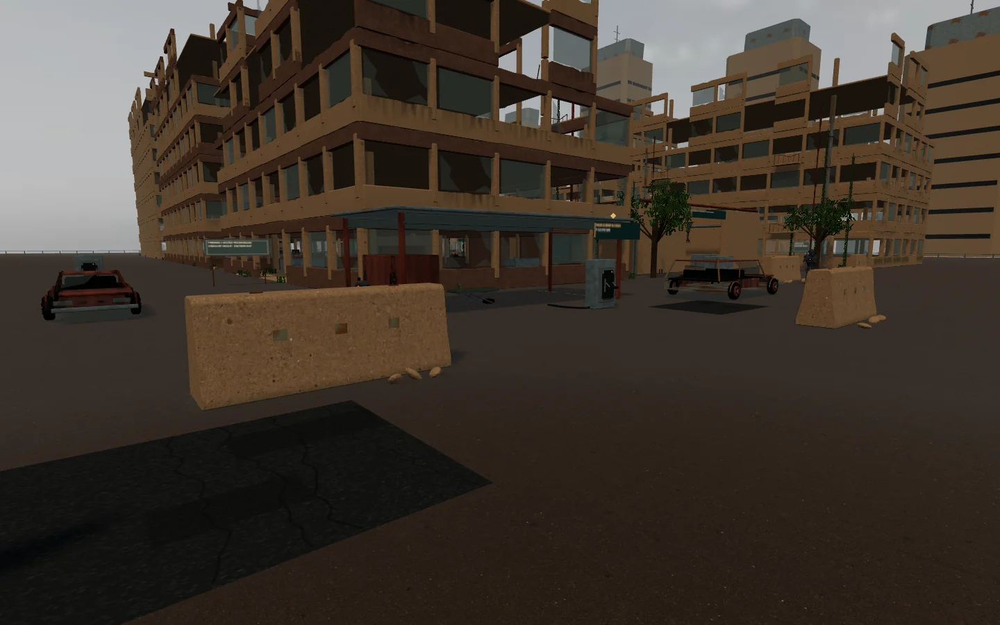
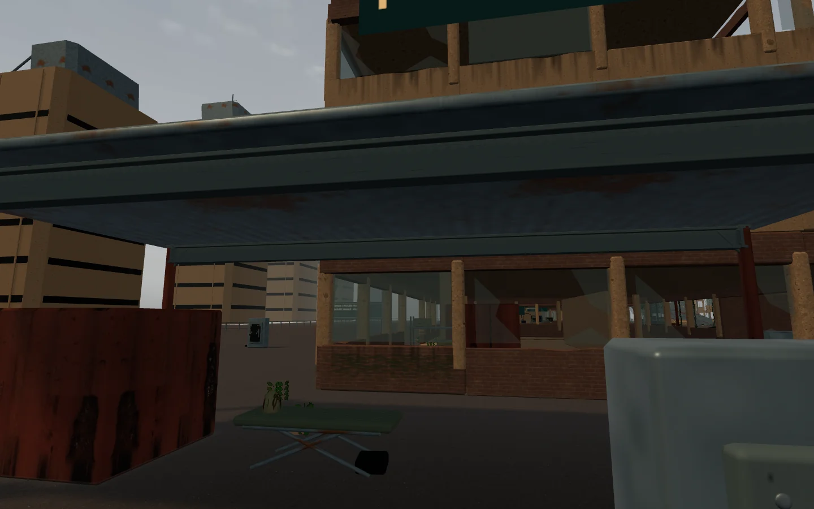
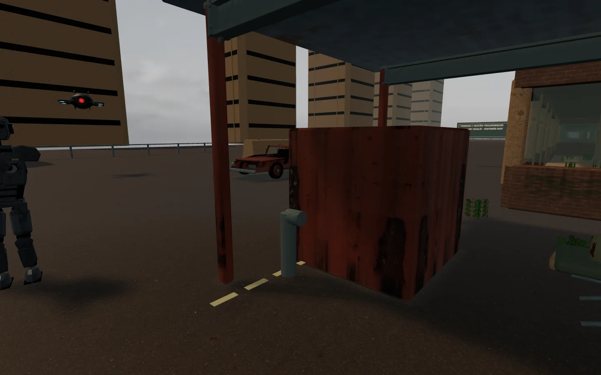

Des détails de RLH adaptés à Vesper : chaussée réparée, marquages usés, charpente métallique et installation encore active. Captures du décor jouable.



Velvet Siege — niveau 1
Iron Maw — niveau 2
Deux pistes fournies par le créateur, compressées en stéréo. Dans le jeu, le fond musical baisse pendant les tirs puis remonte progressivement.